¿Qué pasa el primer sábado de febrero?
Creado en los años 1920 por el bartender estadounidense Victor Morris en su bar de Lima, adaptando el clásico whisky sour con pisco peruano. Se volvió tan importante para la identidad del país que desde 2004 Perú celebra un día nacional dedicado exclusivamente a este cóctel.
RECETA
- 60 ml pisco
- 30 ml jugo de lima
- 20 ml jarabe simple
- 15 ml clara de huevo
- 2–3 gotas de Angostura bitters
- Hielo
- Para preparar el jarabe simple, mezcla partes iguales de azúcar y agua caliente hasta que el azúcar se disuelva. Deja enfriar antes de usar.
- Agrega el pisco, jugo de lima, jarabe simple y clara de huevo a una coctelera sin hielo.
- Agita enérgicamente para crear espuma.
- Agrega hielo y vuelve a agitar.
- Cuela en una copa fría.
- 2–3 gotas de Angostura bitters sobre la espuma.
Vaso:Copa coctél